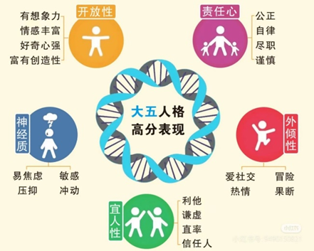
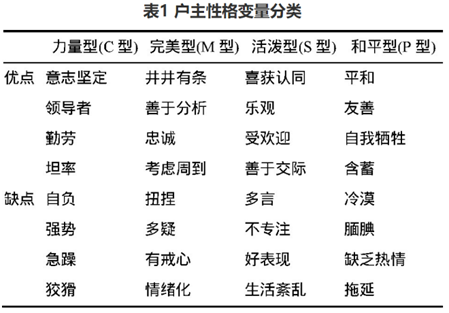

作者：唐语新 中国人民大学社会学院本科生
责编：赵梦晗 中国人民大学人口与健康学院副教授
财务状况的个体差异是一个长期困扰经济学与社会学者的问题。为什么有些人很少出现财务问题，另一些人却经常陷入“薪尽自然凉”的窘境呢？对这个问题的回答涉及很多因素，比如个体的年龄、风险偏好、收入水平等等。以年龄为例，有研究发现，相比于老年人，中青年人需要供养未成年子女、生活开销更大，因此会有更多的经济问题[1]。
01
性格影响收入？
最近几年，越来越多的研究发现，经济困难还与人的性格密切相关。心理学家考斯塔和马克雷提出的大五人格理论，将人的性格划分为五个维度：开放性(openness)、尽责性(conscientiousness)、外倾性(extraversion)、宜人性(agreeableness)、神经质(neuroticism)。其中，神经质得分越高的人负债率也越高[2]，尽责性得分高的人则不容易负债[3]。此外，宜人性得分高，也就是更加随和的人，更容易产生财务问题，包括收入更少和信用评分更低[4-5]。这似乎意味着，善良也有其经济成本。

研究者猜测，这或许与这类群体的行事风格有关。随和的人不愿意破坏人际关系、很容易信任别人，所以才会被人利用和剥削。比如，他们可能因为害怕伤害别人的感情而做出无法兑现的承诺，包括帮亲戚朋友贷款、接受销售员的推销等等。
不过，这种假设一直没有得到实证证据的支持，我们也不清楚性格随和是否还与除收入与信用等级以外的其他经济行为有关。而一项来自英国的研究在这两个方面提供了补充[6]。其中，研究者提出了一种新的中介机制假设——金钱观。他们认为，随和的人或许是因为觉得金钱没那么重要，所以才更可能陷入经济危机。
02
善良为什么有经济代价？
为了检验“行事风格”与“金钱观”这两种中介机制是否成立，他们使用了多个独立来源的数据，从中选取个体存款、负债、处事风格、金钱观和大五人格得分等变量，在控制年龄、性别、教育、收入、是否有未成年子女等特征后，取得了以下发现：
发现一
随和的性格对个人收入具有负向影响，对个人负债无显著影响。平均而言，宜人性得分每增加一个标准差，个人储蓄会减少1600英镑（约合人民币15000元），个人负债则没有显著变化。
发现二
金钱观能够解释随和性格为什么会导致低收入，行事风格则不具有中介效应。金钱观大约可以解释随和性格对收入的直接效应的20%。也就是说，性格随和的人是因为觉得金钱没那么重要，所以才不会有太多储蓄，而不是因为他们容易相信或者顺从别人。
发现三
随和性格的经济代价在低收入者身上更大。研究者检验了个人收入的调节作用，发现在收入越低的人中，随和性格对收入的负向影响越大。
那么，有没有这样一种可能，是陷入财富困境导致人们看淡金钱、变得温和且注重情感，而不是人们因为随和善良才陷入财富困境呢？针对这一点，研究者使用了British cohort study这一具有全国代表性的追踪数据，用个体在16或17岁时（1986年）的宜人性得分来预测其42岁时（2012年）的收入情况。回归结果表明，青少年时期更加温和善良的人，中年时的收入显著更低，从而排除了反向因果的问题。
为了检验结果的稳健性，研究者还探究了区域层面的性格特征与该地区的信用违约率有无关系。在控制各地区就业率、平均年龄、人口密度、性别比、平均受教育水平与贫困程度等因素后，各地区人口的平均宜人性得分每增加一个标准差，信用违约率（当地每一万名成年人中发生破产、无力偿债等的事件数）就会上升9%，特别是对平均年收入更低的地区更是如此。最后，研究者还分析了来自美国的数据，再次印证了上述结论。
03
中国也有类似现象吗？
在中国，关于个体性格与经济状况的研究还相对较少。张宗毅和李莉（2018）曾使用来自某农业综合服务平台公司的数据，讨论农户户主性格与其借贷信用之间的关系[7]。他们将农户性格划分为力量型、完美型、活泼型和和平型等四类（各类型特征见下图），其中和平型性格与大五人格分类中的高宜人性最为接近。
结果显示，和平型农户户主的借贷违约倾向是四类中最高的，这与上述基于英美社会的发现是大致吻合的。他们认为，和平型的人属于“好好先生”，对人对事得过且过，所以才更容易发生贷款违约行为。

数据来源：张宗毅和李莉（2018）
总之，财务状况与心理特征的联系可能比我们想象的要密切得多。善良和信任或许是需要付出经济代价的，尤其是对于那些没有足够经济能力来弥补这种个性的人而言。不过即便如此，我们依然可以通过学习理财知识、加强收支规划等方法来提高自身的理财能力，从而实现善良与财富的双丰收。